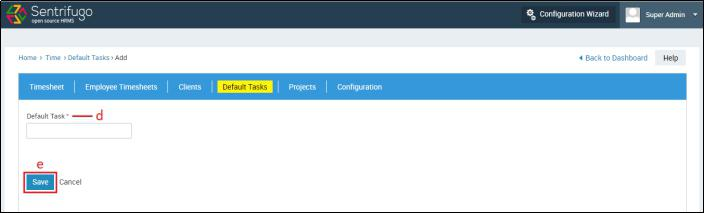
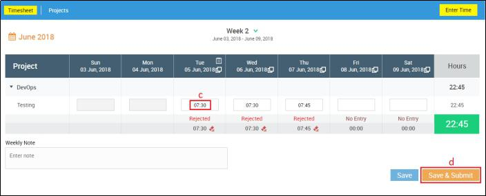
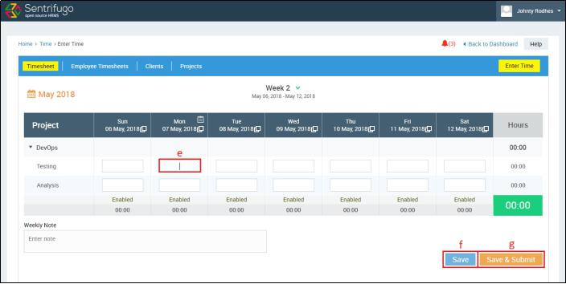

Time
Introduction:
Sentrifugo's Time Module is a unique Timesheet Management tool. Managers can configure project details and add Employees to projects. They can view timesheets of the Employees reporting to them in a daily, weekly or monthly view format. Employees can enter the hours spent on an assigned project. Employee and project based time reports can be generated based on the details entered by the Employees.
Time Management Settings Configuration
Before your Employees can start filling the timesheets, as a Super Admin you must configure the following aspects:
- Add Clients
- Add Projects
- Add Default Tasks
- Configuration
- Weekly Submission Reminder
- Timesheet Blocking Range
How do I add Clients?
- Click Time in the top menu
- Click on Clients in the top menu
- Click +Add button
- Fill in the required details
- Click SAVE button
How do I edit a Client details?
- Click Time in the top menu
- Click Clients in the top menu
- Click Edit icon against the client
- Enter or modify the details
- Click Update button
How do I delete a Client?
- Click Time in the top menu
- Click Clients in the top menu
- Click Delete icon against the client
- Click Yes to confirm
How do I add Projects?
- Click Time in the top menu
- Click Projects in the top menu
- Click +Add button on the right side
- Fill in the required details
- Click SAVE to confirm
- Click Click here to confirm
- Default Tasks - The default tasks that had been set up in the ‘Default Tasks’ tab (you can create a default task here also by selecting the checkbox ‘Default Task’ while creating a new task)
- Frequently Used Tasks - The tasks frequently used in different projects will be populated here
- New Task – For a particular project only, a new task can be added here
- Choose the task category you want by selecting the radio button
- Click +ADD button
- Fill in the details
- Click Update button
- Click on Resources button
- Click on Click here to add a task
- Select any radio button to choose a resource type and click on employee to select
- Click on ADD TO PROJECT button
- Fill in the details
- Click on Update button
- You can filter the tasks displayed by clicking on a radio button (Unassigned/Assigned/All)
- Click on check boxes against the tasks
- Click on Assign Tasks button
How do I edit a Project details?
- Click Time in the top menu
- Click Projects in the top menu
- Click Edit icon against the project
- Enter or modify the details and click on Update button
How do I delete a Project?
- Click Time in the top menu
- Click Projects in the top menu
- Click Delete icon against the project
How do I add Default tasks?
- Click Time in the top menu
- Click Default Tasks in the top menu
- Click +Add button on the right side

- Enter a default task
- Click SAVE button
How do I edit a Default task?

- Click Time in the top menu
- Click Default Tasks in the top menu
- Click Edit icon against the Default task
- Modify the details
- Click Update button
How do I delete a Default task?
- Click Time in the top menu

- Click Default Tasks in the top menu
- Click Delete icon against the Default task
- Click Yes button
How do I Configure Weekly Submission Reminder and Timesheet Blocking Range?
Weekly Submission Reminder
You can set a day in a week to send email notifications to your workforce to remind them about filling their timesheets and sending them for approval.
Timesheet Blocking Range Define a time period within which the Employees’ timesheet will be blocked for a month. Sentrifugo offers you two options to accomplish this feature:
- 1st - End of month
- By the end of every month, all Employees must submit their timesheets
- Two days of grace period i.e. 1st and 2nd of the next month, are provided to the Employees to submit their timesheets. On the 2nd of every month, a notification will be sent as a reminder about blocking the timesheet
- On the 3rd of every month, if the Employees have not submitted their timesheets, their previous month's timesheet will be blocked
- 26th previous month - 25th next month
- By the 25th of every month, all Employees must submit their timesheets
- Two days of grace period i.e. 26th and 27th of the next month, are provided to the Employees to submit their timesheets. On the 27th of every month, a notification will be sent as a reminder about blocking the timesheet
- On the 28th of every month, if the Employees have not submitted their timesheets, their previous month's timesheet will be blocked
- Click Time in the top menu
- Click Configuration in the top menu
- Click Click here to add the Configuration
- Select the Weekly Submission Reminder
- Select the Timesheet Blocking Range
- Click Save button
How do I edit the Weekly Submission Reminder and Timesheet Blocking Range?
- Click Time in the top menu
- Click Configuration in the top menu
- Click Edit button on the top right side
- Modify the data and click on Update button
How do I fill in and submit my Timesheet?
- Click Time in the top menu
- A reminder will be displayed regarding the timesheet submission of the pending week
- Click on Enter Time button on the right side (OR)
- Right click on any date and click on New Timesheet option
- Click on dropdown to select a week for which you would like to enter timesheet
- Click on text box to enter time in hours
- Click on Daily Note icon to enter a daily note
- Click on Clone icon to clone a timesheet
- Click on text box to enter a weekly note
- Click Save to save a timesheet
- Click Save & Submit to save and submit a timesheet for approval
- Status of a timesheet will be displayed as For Approval after the submission
How do I clone my Timesheet?
Navigate to Enter Time page in Time module.
- Click Clone icon
- Select a date to clone the timesheet
- Click on Okay button
- A success message with a Close link will be displayed with the details of the clone
- Click on Erase icon to erase a timesheet
- Click on Save button to save a cloned timesheet
- Click on Save & Submit button to save and submit a cloned timesheet
How do I view my Timesheets in Monthly/Weekly view?
Navigate to Time module.
By default time module will be in Monthly view
- Click Weekly View link
- Total Hours you have worked per month will be displayed
- Click Monthly View link
- Total Hours you have worked per week will be displayed
How do I mark as a leave for timesheet?
- Click Time in the top menu
- Right click on a day and click on Mark as leave text
Please refer section How do I raise a Leave Request?
How do I Approve/Reject a timesheet of an employee?
An Employee having other employees reporting to him/her will be considered as a manager in this Time module.

- Click Time in the top menu
- Click on Employee Timesheets tab in the top menu
- Categories based on status of Timesheet
- Timesheet status (No Entry, Approved, Rejected etc.)
- Click Approve Timesheet to approve
- Click Reject Timesheet and enter reason/note for rejecting the timesheet
- View the Timesheet in detail
- Total no. of hours worked
How do I edit and resubmit a rejected timesheet?
An Employee having other employees reporting to him/her will be considered as a manager in this Time module.

- Click Time in the top menu
- Right click on rejected day and click on Edit Timesheet text

- Modify the data
- Click on Save & Submit button
How do I enable blocked timesheets of the employees?
A timesheet will be blocked only when an employee doesn’t submit his/her timesheet.
- Click Time in the top menu
- Click on Employee Timesheets in the top menu
- Click on Blocked status status
- Click on Enable button against an employee
How do I edit/resubmit my enabled timesheet?

- Click Time in the top menu
- Click on Timesheets in the top menu
- Status of the timesheet will be Enabled
- Right click on any timesheet enabled day and click on Edit Timesheet

- Enter the time
- Click on Save button to save the enabled timesheet
- Click on Save & Submit button to save and submit the enabled timesheet
How do I view the Projects assigned to me?

- Click Time in the top menu
- Click on Projects in the top menu
- Click on the record to view details

How do I view my employee timesheet details?
- Click Time in the top menu
- Click on Notifications icon on the top right side
- Default view of notification will be in Weekly view
- Click to view in Monthly view
- Status of the employee timesheet